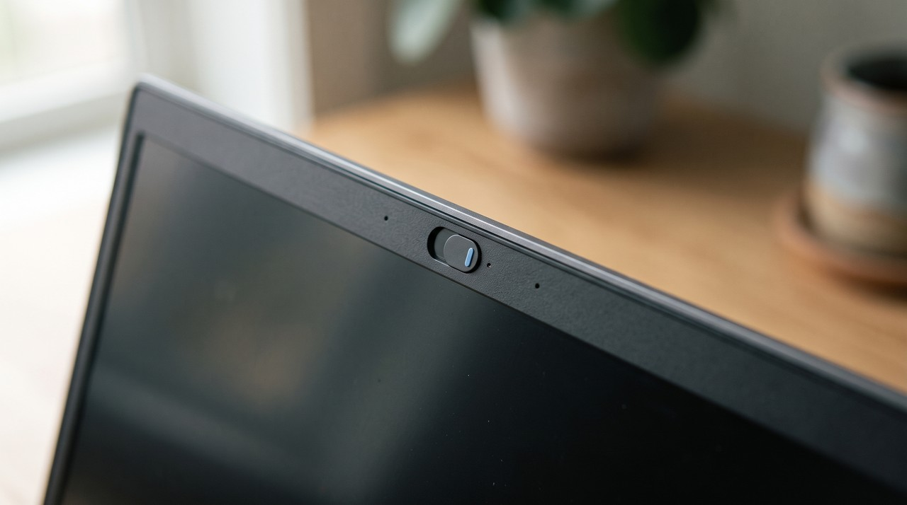

How to turn a Zoom recording into text when Zoom gave you no transcript
Zoom only writes a transcript for cloud recordings on a paid plan with the audio transcript setting switched on. A local recording comes with no transcript at all, and this is what a free account makes. To turn it into text, open the .mp4 Zoom saved in your Documents\Zoom folder in a transcription tool that runs on your own computer. Use one that also saves the screen if slides were shared in the meeting.
You recorded a Zoom call and the meeting ended, so now you want the words. You open the folder Zoom made and see a video file and an audio file, but there is no text anywhere. This is completely normal, and nothing went wrong with your recording.
Zoom will not make a transcript for your recording if it is on your computer, so you have to make it yourself from the .mp4 file. Zoom only makes a transcript for recordings saved to Zoom's cloud, and the cloud is a paid feature. A free account or anyone who chose Record on this Computer just gets a video and nothing to read.
Why did my Zoom recording come with no transcript?
Zoom has two kinds of recording. A cloud recording is stored on Zoom's servers, and a local recording is saved as files on the computer that ran the meeting. Only the cloud kind gets Zoom's audio transcript, and Zoom lists what it needs on its audio transcription help page. You need a Pro, Business, Education or Enterprise account, and you need cloud recording and audio transcription switched on.
The transcript arrives a little after the recording as a separate VTT file when all three are in place. VTT is a captions format, which means it has plain lines of text with a start and end time on each one. It is a useful format, but it is still only the words, and it stays in the cloud next to the recording instead of on your drive.
| Your recording | Does Zoom give you text? | What you have to work with |
|---|---|---|
| Local recording, free account | No | An .mp4 and an .m4a in a dated folder |
| Local recording, paid account | No | The same files on your computer |
| Cloud recording, paid account, transcript off | No | The video in your Zoom web account |
| Cloud recording, paid account, transcript on | Yes, a VTT file | Words with times, no picture of the screen |
Where does Zoom save a local recording?
Zoom puts local recordings in a folder called Zoom inside your Documents folder by default on Windows and on a Mac. Each meeting gets its own folder named with the date and the meeting name. You will usually find an .mp4 inside, which is the video with the sound, and an .m4a, which is just the sound.
If the folder is not there, someone changed the location when Zoom was set up. You can open the Zoom app, go to Settings, then Recording, and click Open next to the local recording location. The files only appear after the meeting ends and Zoom finishes converting them, so closing the laptop straight after the call can leave you with a half finished folder.
What is the free way to turn the Zoom .mp4 into text?
OpenAI's Whisper is free and runs on your own computer if you are happy with a terminal. A terminal is a window where you type text commands to your computer. It needs Python and ffmpeg installed first, and the setup steps are on that page. It is one command after that.
- Open a terminal inside the meeting's folder in Documents\Zoom.
- Run
whisper "your-file-name.mp4" --model small --output_format txt, using the real name of the .mp4. - Wait. Whisper listens to the whole recording, so an hour of meeting takes a while on a normal laptop.
- Open the .txt file it writes next to the recording.
You can also point Whisper at the .m4a file, which is smaller and gives you the exact same words. The problem is that Whisper only hears the audio and ignores the screen. You get lines like "if you look at row twelve here" and no row twelve to look at if someone shared slides or a spreadsheet in a meeting.
How do I keep the shared screen as well as the words?
A Zoom meeting is often half talk and half screen share. You usually needed the recording to see the project plan, the dashboard or the slide with the numbers on it, but a plain transcript throws those parts away.
I built VideoDoc for this. You open the .mp4 from the Local tab and press Start, and it makes a PDF and a Markdown file with the timestamped transcript. It also takes pictures of the screen and places each picture next to the words spoken over it. Everything runs on your own computer, so the recording is never uploaded anywhere, and it works the same on a free account's recording as on a paid one because it only needs the file.
The part that matters for Zoom is how the pictures are chosen. Zoom records whatever was on the main view, and that view jumps between faces and the shared screen. VideoDoc scores every frame for content like text, slides, code and charts, and the screen wins over the faces when a part of the meeting has both. Identical slides are kept once, so a ten minute talk over one slide gives you one picture instead of hundreds.
What about the other people in the meeting?

A meeting recording has other people's faces and voices in it, and that changes what you should do with it. Ask yourself whether the people on the call would be fine with that before you send it anywhere. This is one more reason to keep the processing on your own computer instead of using an upload site.
VideoDoc can black out faces in both the saved frames and the screenshots inside the document if it is going to a client or into an AI chat. The webcam tiles turn into solid black shapes, and the shared screen beside them is left exactly as it was. The app tells you how many faces it covered and how many pictures had no face found, so a missed face is never silent.
VideoDoc does not label who said what. The transcript is one stream of words with times, so you will still be working out the speakers from context in a call with five people. It needs the recording file, so it cannot join a live meeting and it cannot reach a recording that only lives in someone else's Zoom cloud account. How long a job takes just depends on your computer and the length of the meeting.
Try it on the meeting you recorded this week.
Free to try on your own computer. Pro is $19 once, for two machines.
The slides are the whole point if you record webinars rather than meetings. I wrote a separate guide on turning a webinar recording into a document for that case. And if you have a whole stack of recorded meetings to get through, there is one on batch converting a folder of videos into documents.
Quick questions
Does Zoom transcribe local recordings?
Zoom does not transcribe local recordings. Zoom's audio transcript is made only for cloud recordings on a Pro, Business, Education or Enterprise account with audio transcription switched on. A local recording just gives you an .mp4 and an .m4a and nothing to read.
Can I get a Zoom transcript on a free account?
You cannot get a transcript from Zoom itself because free accounts cannot record to the cloud. You can still turn the local .mp4 into text with a tool on your own computer. Whisper does words only, and VideoDoc does words plus the shared screen.
Where are my Zoom recordings saved?
Local recordings go to a Zoom folder inside Documents by default, and there is one folder per meeting. Open Zoom, go to Settings, then Recording, and click Open next to the local recording location if you cannot find it.
Should I transcribe the .mp4 or the .m4a file?
Either file works for words only, and the .m4a is smaller. You should use the .mp4 if you also want pictures of the shared screen, because the .m4a has no video in it.
Open your Documents\Zoom folder tonight, and turn the last meeting you recorded into a document you can search.
I am a telecom engineer and business analyst from Pakistan, and I build small honest desktop tools under Designesh. I made VideoDoc because I wanted my AI to read the lectures I study from. Everything here is tested on my own machine first.